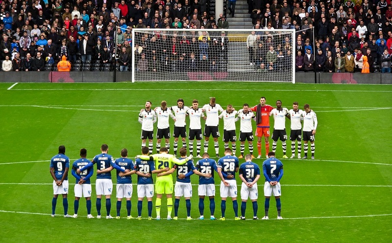
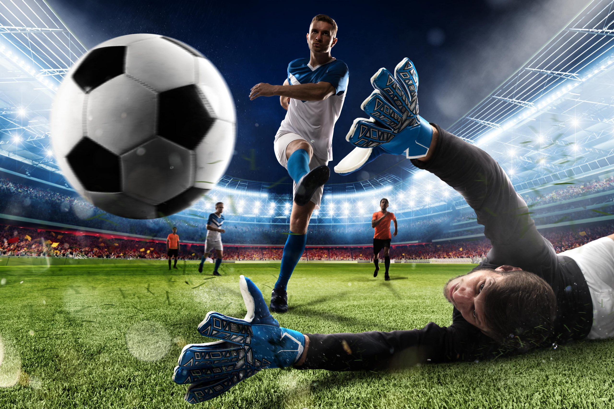
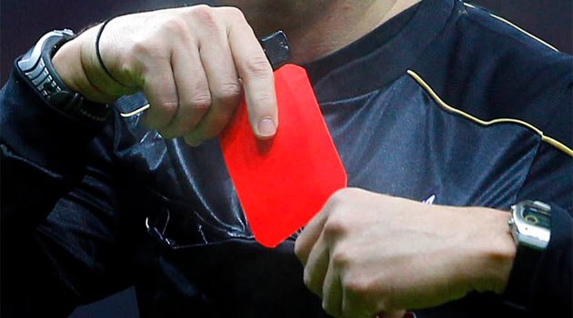

FUTBOL NEDİR ?
Futbol, on birer oyuncudan oluşan iki takım arasında, kendine özgü küresel bir topla oynanan takım sporudur. 21. yüzyıl itibarıyla 200'ün üzerinde ülkede 250 milyonu aşkın oyuncu tarafından oynanmakta olup dünyadaki en popüler spordur.
FUTBOL KURALLARI :

HAKEM KURALLARI :
Hakem oyun kurallarını uygulamakla yetkili kişidir.
Futbol oyununda, yardımcı hakemler ve var ise dördüncü hakem ile iş birliği içinde yönetilmektedir.
Futbolda hakem kurallarından biride oyuncularının giysilerinin futbola uygun olup olmadığı kontrol edilir.
Oyunun süresini hakem belirler ve oyun ile ilgili kayıtları tutmaktadır.
Oyundaki kuralların herhangi bir şekilde ihlalinde veya diğer bir sebepten gerekli görür ise, oyunu durdurur, geçici olarak erteler veya tatil etmekle yetkilidir.
Oyunda bir oyuncunun ciddi sakatlandığı kanısına varır ise oyunu durdurur.
Durmuş olan oyunu tekrar başlatmaktadır.
⎯⎯⎯⎯⎯⎯⎯⎯⎯⎯⎯⎯⎯⎯⎯⎯⎯⎯⎯⎯⎯⎯⎯⎯⎯⎯⎯⎯⎯⎯⎯⎯⎯⎯⎯⎯⎯⎯⎯⎯⎯⎯⎯⎯⎯⎯⎯⎯⎯⎯⎯⎯⎯⎯⎯⎯⎯⎯⎯
⎯⎯⎯⎯⎯⎯⎯⎯⎯⎯⎯⎯⎯⎯⎯⎯⎯⎯⎯⎯⎯⎯⎯⎯⎯⎯⎯⎯⎯⎯⎯⎯⎯⎯⎯⎯⎯⎯⎯⎯⎯⎯⎯⎯⎯⎯⎯⎯⎯⎯⎯⎯⎯⎯⎯⎯⎯⎯⎯
FUTBOL SAHA ÖLÇÜLERİ :
Yaygın bir spor dalı olan futbol oyunu saha ölçüleri genellikle şu şekildedir; Futbol sahası, dikdörtgen biçiminde ve sahanın eni 45 ile 90 metre arasında olmaktadır. Boyu ise 90 ile 120 metre arasında olması gerekmektedir. Futbol oyunu uluslararası standartlarda yapılan statlarda ise bu ebatlar en olarak genellikle şu şekildedir; Saha ölçüleri 64 ile 75 metre arasında, boy olarak da 105 metre ile 120 metre arasında bir ölçütte olmaktadır.

FUTBOL UZATMA KURALI :
Futbolda uzatma kuralı olarak bilinen bu kural genellikle maçın normal süresi beraberlikle sonuçlanır ise, 15'er dakikalık iki uzatma devresi oyunu oynanmaktadır. Bu oyunda eğer bu uzatma devreleri sonucunda da kazanan taraf çıkmaz ise, seri penaltı vuruşlarına geçilmektedir. Ayrıca her takım 5'er penaltı vuruşu yapmaktadır. Bu aşamada her iki takım, sırasıyla penaltı atışı kullanabilmektedir.
⎯⎯⎯⎯⎯⎯⎯⎯⎯⎯⎯⎯⎯⎯⎯⎯⎯⎯⎯⎯⎯⎯⎯⎯⎯⎯⎯⎯⎯⎯⎯⎯⎯⎯⎯⎯⎯⎯⎯⎯⎯⎯⎯⎯⎯⎯⎯⎯⎯⎯⎯⎯⎯⎯⎯⎯⎯⎯⎯
⎯⎯⎯⎯⎯⎯⎯⎯⎯⎯⎯⎯⎯⎯⎯⎯⎯⎯⎯⎯⎯⎯⎯⎯⎯⎯⎯⎯⎯⎯⎯⎯⎯⎯⎯⎯⎯⎯⎯⎯⎯⎯⎯⎯⎯⎯⎯⎯⎯⎯⎯⎯⎯⎯⎯⎯⎯⎯⎯
FUTBOLDA KAÇ HAKEM VAR? :
Dünya çapında oynanan popüler bir oyun olan futbol oyununda 4 hakem bulunmaktadır. Oyundaki hakemlerden; orta hakem, 2 yardımcı ya da yan hakem ve 4. Hakem olmaktadır.

ÖNEMLİ KURALLAR :
PENALTI KURALI :
Futbolda penaltı kuralında kaleci topa vuruluncaya kadar kendi kale çizgisini terk edemez. Bir futbol maçında penaltılara kalındığı zaman normal süre ya da uzatmalarda verilen kartlar seri penaltılarda geçerli olmayacaktır. Oyunda penaltı atışı sırasında, eğer bir kaleci ihlalde bulunur ise önce sözlü bir şekilde uyarı yapılacak, eğer ki devam ederse sarı kart gösterilecektir. Kaleci eğer penaltıda kural ihlali yapar ise ve gol olmazsa, kaleci penaltı kullanan oyuncuyu "açık şekilde" rahatsız etmişse tekrarlanmış olacaktır.
⎯⎯⎯⎯⎯⎯⎯⎯⎯⎯⎯⎯⎯⎯⎯⎯⎯⎯⎯⎯⎯⎯⎯⎯⎯⎯⎯⎯⎯⎯⎯⎯⎯⎯⎯⎯⎯⎯⎯⎯⎯⎯⎯⎯⎯⎯⎯⎯⎯⎯⎯⎯⎯⎯⎯⎯⎯⎯⎯
⎯⎯⎯⎯⎯⎯⎯⎯⎯⎯⎯⎯⎯⎯⎯⎯⎯⎯⎯⎯⎯⎯⎯⎯⎯⎯⎯⎯⎯⎯⎯⎯⎯⎯⎯⎯⎯⎯⎯⎯⎯⎯⎯⎯⎯⎯⎯⎯⎯⎯⎯⎯⎯⎯⎯⎯⎯⎯⎯
FUTBOL OYUN KURALLARI :
Futbol oyunu dünyanın en popüler spor dalı olarak bilinmekte ve Avrupa'dan Afrika'ya, Asya'dan Amerika'ya dek çok geniş bir coğrafyaya dağılmıştır. Futbol ayrıca ekonomik anlamda da dünya genelindeki en büyük sektörlerden biri olmaktadır. Futbol bazı kurallar çevresinde uygulanmaktadır. Futbol oyun kuralları şu şekildedir;
Dünya genelinde bilinen bir spor dalı olan futbol, 90 metreye 45 metre hava durumuna göre beyaz veya siyah çizgiler ile sınırlandırılmış olan çim sahalarda oynanan bir oyundur. Bu oyunda sahada, orta saha çember halinde, ceza sahaları ise dikdörtgen şeklinde olmaktadır. Futbol sahasında 2 kale bulunur.
FUTBOLCULAR :
Lionel Messi - Barcelona & Arjantin :
Yıllar geçiyor ama Messi'nin gezegendeki en iyi oyunculardan biri olduğu gerçeği hiç değişmiyor. Geçen sezon Ligue 1'de çift haneli gol ve asist sayılarına ulaşan Messi, bu süreçte hem de Ligue 1 hem de Dünya Kupası şampiyonluğu yaşadı ve tarihin en büyüğü olup olmadığı konusunda yeni bir done verdi.
Neymar - PSG & Brezilya :
30 yaşındaki Neymar sihirli bilekleriyle rakiplerini şaşkına çevirmeye devam ediyor. GOAL 50 için oy kullanan futbolseverlerden büyük bir destek gören Neymar, nefes kesici yeteneklerini her zaman olduğu gibi son 12 ayda da gösterdi. Brezilyalı süper yıldız bu sezon Ligue 1'de çıktığı 14 maçta 20 gole katkıda bulundu.
Erling Haaland - Manchester City & Norveç :
Haaland yaz aylarında 51 milyon sterlin karşılığında Manchester City'ye imza attı ve Premier Lig'de korkunç bir etki yarattı. 22 yaşındaki oyuncu şimdiden 13 lig maçında dokuzu hat-trickle olmak üzere 18 gol attı. Haaland'ın savunmacılar üzerindeki etkisinin 2023'te ne seviyeye geleceği ise merakla bekleniyor.
Karim Benzema - Real Madrid & Fransa :
Benzema'nın geçen sezon Real Madrid'de gösterdiği başarı 34 yaşındaki oyuncuya Ballon d'Or kazandırdı. Şampiyonlar Ligi şampiyonluğu yolunda PSG'ye karşı 17 dakika içerisinde hat-trick yapan Benzema, sakatlığı nedeniyle Fransa'nın Dünya Kupası yolculuğunda yer alamadı.
Kylian Mbappe - PSG & Fransa :
2018'de henüz 19 yaşındayken Fransa ile Dünya Kupası'nı kazandığında Pele'nin halefi olarak gösterilen Mbappe, bu beklentileri gerçeğe dönüştürme yolunda kararlı bir adım attı ve dünyanın en iyi oyuncularından biri oldu. 23 yaşındaki oyuncu sezon dördüncü defa Ligue 1'de Altın Ayakkabı kazandı ve şampiyonluklarına bir yenisini daha ekledi. Real Madrid'e transfer olacağı yönündeki söylentiler ise en azından şimdilik durmuş durumda.
Kevin De Bruyne - Manchester City & Belçika :
De Bruyne Manchester City geçtiğimiz sezon Premier Lig şampiyonluğunu elde ederken 33 lig golüne katkıda buldu ve bu süreçte yılın oyuncusu eçildi. Belçikalı yıldız sınırsız yaratıcılığı ve yüksek kalitesiyle büyülemeye devam ediyor.
Luka Modric - Real Madrid & Hırvatistan :
Hem Hırvatistan hem de Real Madrid için tempoyu belirleyen isim olan Luka Modric ilerleyen yaşına rağmen üst seviye performansını sürdürüyor. Neslinin en iyi orta saha oyuncularından biri olan Modric, muhtemelen son Dünya Kupası'nda uluslararası futbola ışıltılı bir veda etti.
Robert Lewandowski - Barcelona & Polonya :
Robert Lewandowski'nin giydiği forma değişti ama gol atma alışkanlığı hiç değişmedi. Bayern Münih'ten Barcelona'ya transfer olan oyuncu şimdiden ilk 18 maçında 18 gole ulaştı ve La Liga'da forma giyen savunma oyuncularının yeni kabusu oldu. Bundesliga'daki defanslar ise bu durumdan oldukça memnun olmalı.
Mohamed Salah - Liverpool & Mısır :
2021'de etkinliğine sahip olmasa da Salah seviye çıtasını o kadar yukarı taşımıştı ki beklentilerin altında kalmasına rağmen Premier Lig'de Altın Ayakkabı'yı bir kez daha elde etmeyi başardı.
Sadio Mane - Bayern Münih & Senegal :
30 yaşındaki Senegalli yıldız 2022'de ilk Afrika Uluslar Kupası şampiyonluğunu yaşadı ve FA Cup ile Lig Kupası şampiyonluğunun yanı sıra Şampiyonlar Ligi'nde de final oynadı. Kariyerinin en güzel yılını geçiren Mane'nin sakatlığı nedeniyle 2022 Dünya Kupası'nı kaçırması ise acı bir adaletsizlikti.
Kıymetli Yapımcımız:
YUSUF DENİZ SEVGİL